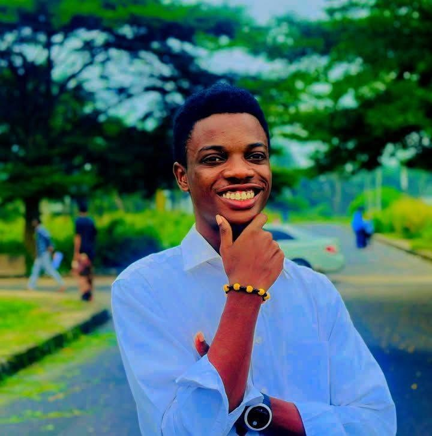
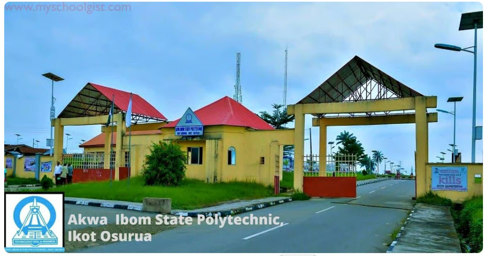
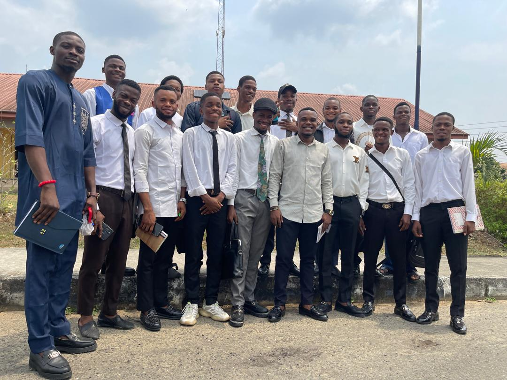

AKWA POLY FC
Saint Emmy
Coach · Akwa Poly FC
0Squad players
0Matches played
0Wins
0Trophies

Technology, Skill & Progress
Our school
1991Established
961First students
15First programmes
Match centre
PLAY · UNITE · WIN
Join the team
Our Squad
One team. One dream. Meet the players representing Akwa Poly FC.
Player portraits marked “sample portrait” are temporary visual references of international footballers, not photos of Akwa Poly FC members.

AKWA POLY FCUnited by the game.
International portrait photo credits
Temporary sample portraits are used only to fill the squad layout. They do not imply that these international players belong to Akwa Poly FC or endorse the club.
- Lionel Messi — Кирилл Венедиктов / soccer.ru, CC BY-SA 3.0.
- Cristiano Ronaldo — AtilaTheHun, CC BY 2.0.
- Neymar — Sérgio Savarese, CC BY-SA 2.0.
- Sadio Mané — Bryan Berlin / WikiPortraits, CC BY-SA 4.0.
- Mohamed Salah — Bryan Berlin / WikiPortraits, CC BY-SA 4.0.
- Vinícius Júnior — Bryan Berlin / WikiPortraits, CC BY-SA 4.0.
- Son Heung-min — Crofab, CC BY-SA 3.0.
- Harry Kane — Bryan Berlin / WikiPortraits, CC BY-SA 4.0.
- Jude Bellingham — Bryan Berlin / WikiPortraits, CC BY-SA 4.0.
- Kylian Mbappé — Bryan Berlin / WikiPortraits, CC BY-SA 4.0.
Portraits are used under the licenses listed above. Please replace them with actual club-player photographs when available.
The people behind the club
Our history
The idea
Students at Akwa Ibom State Polytechnic, Ikot Osurua, wanted one team to carry the school's name onto the pitch.
Students at Akwa Ibom State Polytechnic, Ikot Osurua, wanted one team to carry the school's name onto the pitch.
The first squad
Trials brought together players from every department, and Coach Saint Emmy built the first eleven.
Trials brought together players from every department, and Coach Saint Emmy built the first eleven.
First tournaments
The club entered inter-school matches and learned to win as a team, on and off the pitch.
The club entered inter-school matches and learned to win as a team, on and off the pitch.
Today
Akwa Poly FC trains weekly, backed by the rector, and keeps the trials open for every student.
Akwa Poly FC trains weekly, backed by the rector, and keeps the trials open for every student.
Gallery
Tap any photo to enlarge it.
Your photo here
Your photo here